대표 작업
전체 보기 ›당근비즈니스 단골·리뷰 — 5월
3D · 모션 · 편집 · 2026-05
안 쓰는 짐 정리 — 아이소메트릭 3D
3D · 모션 · 2025-10
당근 10주년 — 영상 시리즈 24개 + 배너 6규격
모션 · 배너 · 규격 세트 · 2025-11
Next to Zero — 3D 모션그래픽
3D · 모션 · 2025-05 ↗
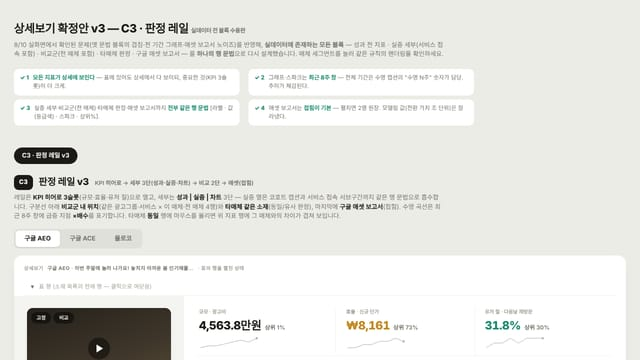
CreativeReporter — 3매체 소재 성과 주간 자동 집계
기획 · 개발 · 운영 · 2026-06~

3D 구도실 — 생성·촬영 전에 카메라를 잡는 프리비즈 편집기
기획 · 개발 · 2026-10 ↗
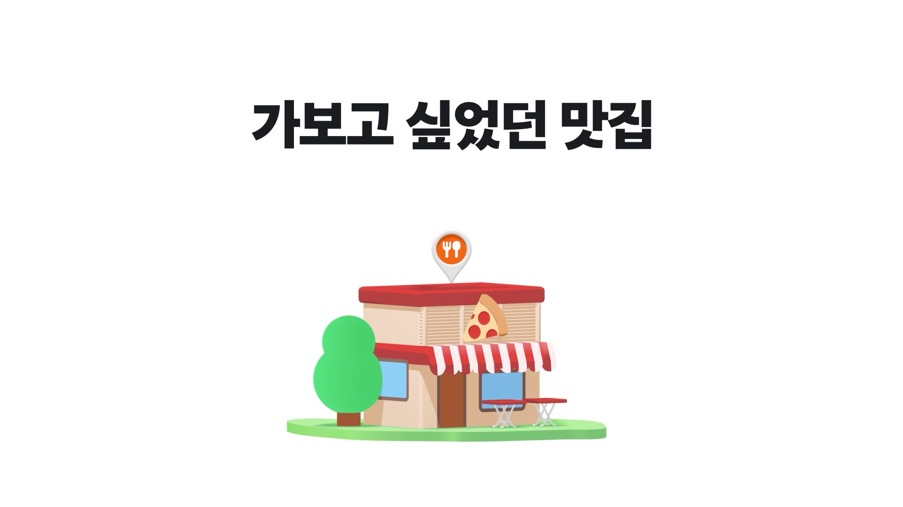
당근비즈니스 단골·리뷰 — 6월
3D · 모션 · 2026-06
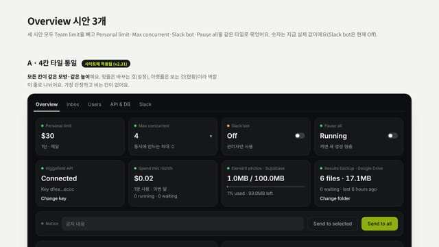
KarrotField — 사내 이미지·영상 생성 서비스
기획 · 개발 · 운영 · 2026-10
퍼포먼스 소재 · 세로
전체 보기 ›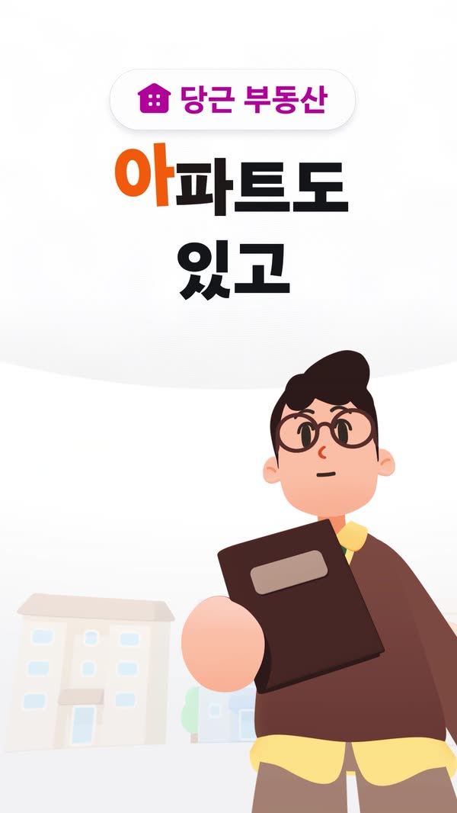
당근 브랜드 인지 캠페인 — 캐릭터 모션
캐릭터 애니메이션 · 렌더 · 2025
당근 래플 — 3D 모션
3D · 모션 · 2025-12
당근가 키워드 — 템플릿 시스템 (가을·신년·봄)
모션 · AE 익스프레션 · 2025-09 ~ 2026-03
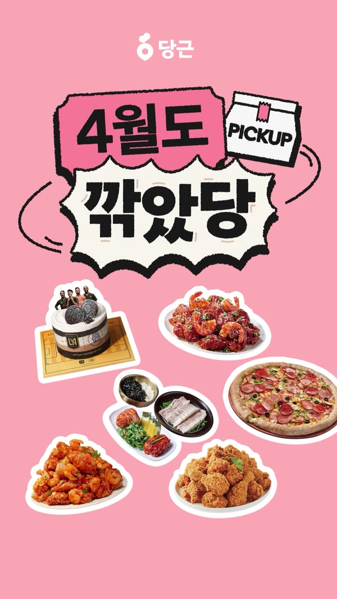
월간 픽업 — 인트로 모션
3D · 모션 · 2026-03
7월 사장님향 프로모션 — AI+실사 숏폼
기획 · AI 생성 · 편집 · 2026-07
당근알바 — 설날 시즌 캠페인
3D · 모션 · 편집 · 2026-02
당근 부동산 — 전월세 프로모션 (1·2)
모션 · UI · 2026-01
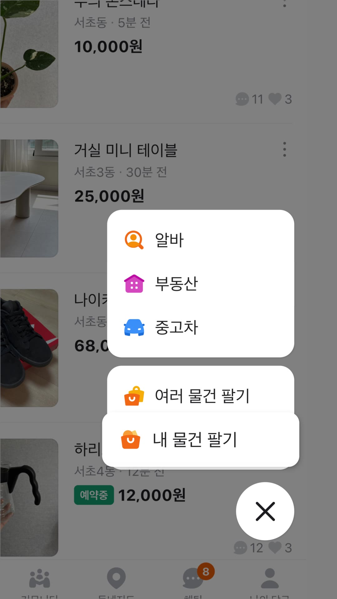
당근 옷장 — AI 자동 판매글 (v1·v2)
AI · UI 모션 · 2026
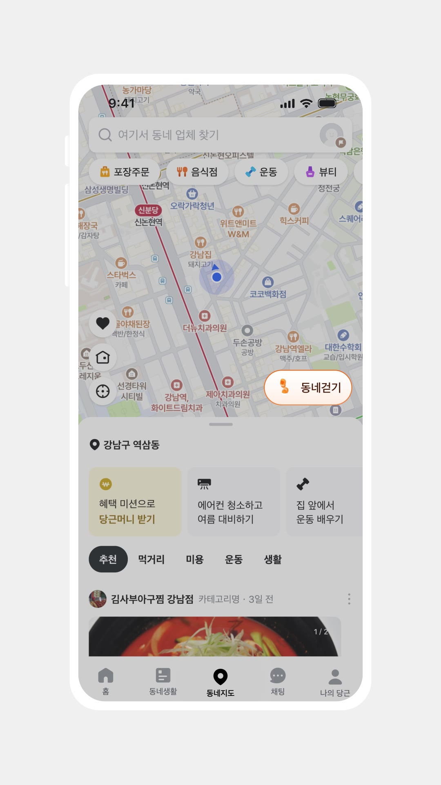
만보 걷기 — 게이미피케이션
모션 · UI · 2025-11
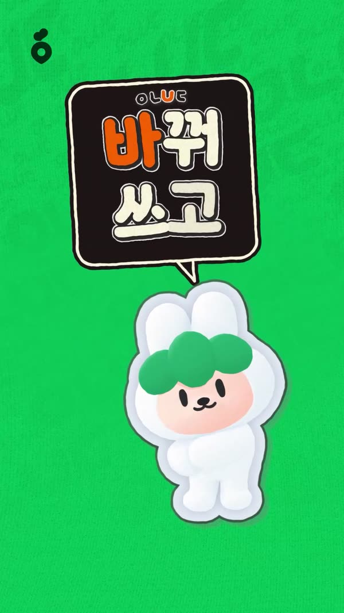
아나바다 — 키네틱 타이포
모션 · 타이포 · 2025
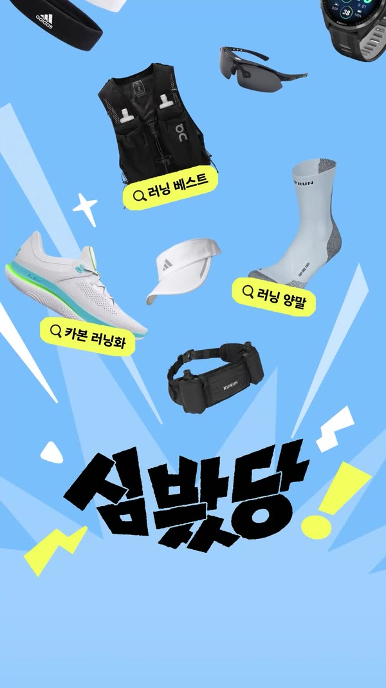
심봤당 — 브랜드 혜택 모션 (+사이즈 베리에이션)
모션 · 편집 · 2026-04
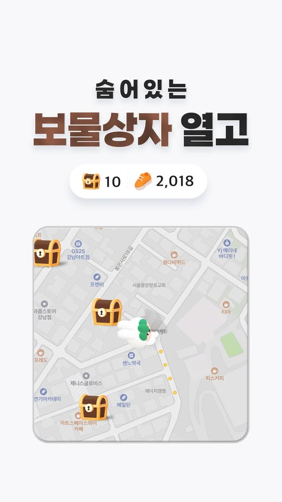
동네 걷기 — 보물상자 3D
3D · 게이미피케이션 · 2025
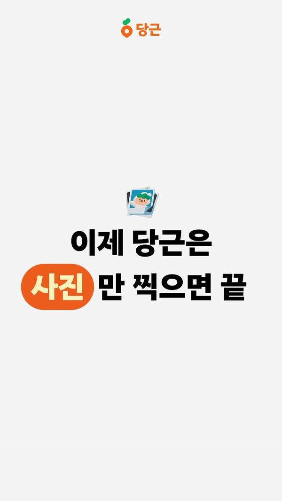
AI 자동 글쓰기 — 매물 생성
모션 · AI 비주얼 · 2025
캠페인 부스팅 ARS 콘텐츠
모션 · 편집 · 2025
당근 알바 — 봄 시즌 프로모션
모션 · UI · 2026-02
퍼포먼스 소재 · 가로
전체 보기 ›개인 작업
전체 보기 ›도구 · 자동화
전체 보기 ›
CreativeNamer + creativeRule — 소재명 규칙 엔진
기획 · 개발 · 2026-03~ ↗

HF Unlimited Runner + 힉스필드 작업공간
기획 · 개발 · 2026-10

AE 익스프레션 · C4D XPresso 작업 효율화
모션 · 스크립팅 · 2025

itempalette — 매물 선정 대시보드
설계 · 개발 · 2026-04 ↗

PromptLibrary — 프롬프트 스튜디오 PWA
개발 · 2026-06 ↗
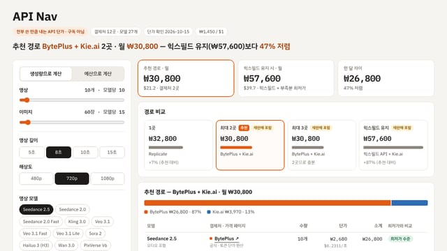
API Nav · 요금 비교 · 구독 손익 시뮬레이터
개발 · 분석 · 2026-10
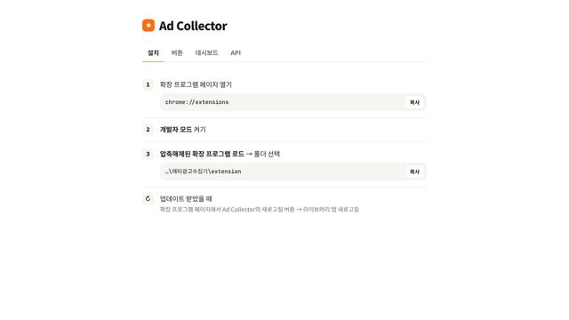
Ad Collector — 메타 광고 라이브러리 수집 확장 + 대시보드
개발 · 2026-10

로컬러너스 러너 사진 시스템 — 프롬프트 스튜디오
개발 · 2026-09
BusTime — 서울 버스 도착 위젯 (개인)
개발 · 2026-07 ↗